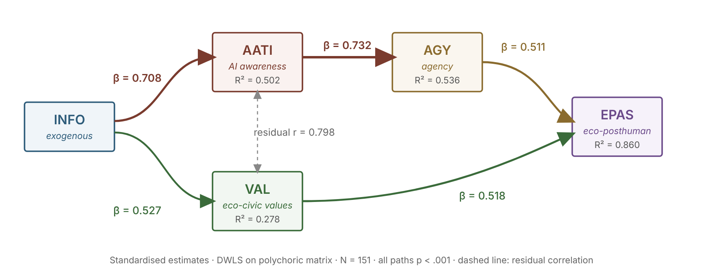

SEM
Model compatible with the hypothesised paths
INFO → AATI, VAL · AATI → AGY · AGY, VAL → EPAS
The five dimensions of the EcoAI Framework
INFOEco-Digital Informational Literacy
Skills to search, evaluate and critically use information on environmental and civic topics through digital sources
ω0.662
AVE0.399
peso0.160
AATIAI Awareness & Trust
Understanding of algorithmic functioning, bias perception, orientation toward ethically governed AI
ω0.791
AVE0.405
peso0.215
VALEco-Civic Values
Value-based orientation toward sustainability, collective environmental responsibility, and civic justice
ω0.839
AVE0.519
peso0.215
AGYEco-Digital Civic Agency
Capacity and willingness to act as a responsible citizen in eco-digital contexts; sense of efficacy and action orientation
ω0.776
AVE0.381
peso0.181
EPASEco-Posthuman Agency Scale
Subjective disposition to recognise oneself as part of hybrid human-technological-ecological networks; openness to relational integration
ω0.729
AVE0.535
peso0.230
ω = McDonald's omega coefficient; AVE = Average Variance Extracted; weight = normalised weight in the EcoAI Index (one-factor model on construct means, N = 191, sum = 1.00)
Structural model (SEM): standardised path coefficients β

Standardised estimates, DWLS on a polychoric matrix, N = 151. All paths p<.001. The two paths to EPAS have equivalent size (0.511 and 0.518) and the data do not support a hierarchy between them. Cross-sectional data: the coefficients describe associations, not causal or temporal effects. Indirect effect INFO → EPAS: 0.538.
Eco-Index — weighted composition
INFO0.160
AATI0.215
VAL0.215
AGY0.181
EPAS0.230
Weights are the normalised loadings of a one-factor model estimated on the five construct means (N = 191, sum = 1.00). Distribution: z-score M = 0.006, SD = 0.762; in the 1–5 metric M = 3.119, SD = 0.592, range 1.911–4.632.
EcoAI Index profiles (empirical terciles, n = 64/63/64, N = 191; means on the 1–5 scale)
◼ Low Class
INFO
2.047
AATI
2.430
VAL
2.797
AGY
2.508
EPAS
2.552
◼ Mid Class
INFO
2.508
AATI
3.090
VAL
3.540
AGY
2.852
EPAS
3.238
◼ High Class
INFO
3.094
AATI
3.819
VAL
4.147
AGY
3.516
EPAS
4.089
Differences across Index classes (η²)
EPASη²= 0.570
AATIη²= 0.532
VALη²= 0.524
AGYη²= 0.381
INFOη²= 0.313
Classes are defined through the Index itself, so every dimension contributes to the classification and the differences are amplified by construction. With classes recomputed excluding the dimension compared (leave-one-out) η² falls to EPAS 0.385, AATI 0.376, VAL 0.318, AGY 0.249, INFO 0.200. The margin between EPAS and AATI is too small to claim a primacy. The preliminary ceiling effect of VAL in the Low class is not supported (M = 2.797).
Key inter-factor correlations (CFA)
INFO
AATI
VAL
AGY
EPAS
INFO
1.00
0.687
0.497
0.526
0.616
AATI
0.687
1.00
0.859
0.729
0.825
VAL
0.497
0.859
1.00
0.605
0.813
AGY
0.526
0.729
0.605
1.00
0.811
EPAS
0.616
0.825
0.813
0.811
1.00
Latent factor correlations from the CFA (N = 151). Bold values indicate correlations above 0.80. None exceeds 0.90, but the HTMT ratio for AGY–EPAS is 0.880 (above the conservative 0.85) and the Fornell-Larcker criterion is not met for six pairs out of ten: discriminant validity is only partial.
EcoAI Framework (Rubino, 2025) · Confirmatory survey: N=198 collected, CFA and SEM on 151 complete cases, EcoAI Index and class comparisons on 191 · DWLS estimator on polychoric matrix (JASP) · Cross-sectional, self-reported data, non-representative school samples · Items scored 1–5 Likert